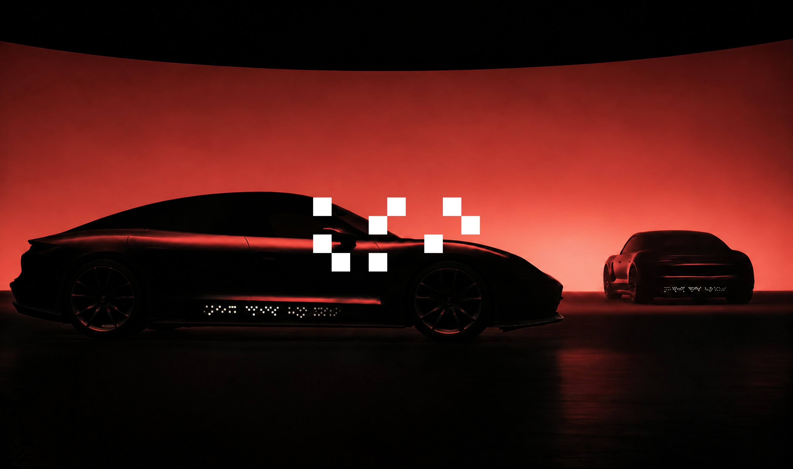
Mobility UX
In the age of AIDV, we are creating a new language for the road. So people and machines can understand each other’s intentions and move together.
From SDV to AIDV
소프트웨어가 차의 기능을 정의하던 시대에서, AI가 상황을 해석해 경험을 정의하는 시대로.
우리는 AI가 주변 상황과 사용자의 의도를 이해하고, 그에 맞는 경험을 제공하는 차를 AIDV라고 부릅니다.
이 프로젝트는 그 해석을 차 안에서 차 밖으로 넓힙니다.
AIDV
AI-Defined Vehicle
주변 상황, 차의 상태, 탑승자의 요청을 읽고 지금 필요한 것을 판단하는 차
Why Level 4
우리는 자율주행 레벨 4를 배경으로 삼았습니다.
레벨 4부터는 정해진 조건 안에서 운전자가 없어도 차가 스스로 판단하고 움직입니다. 차가 직접 말해야 하는 첫 단계입니다.
레벨은 차 한 대의 능력을 말할 뿐, 도로가 어떤지는 말하지 않습니다. 우리는 이 차가 사람이 운전하는 차, 보행자, 배송 로봇, 차단기와 같은 길을 쓰는 도로를 전제로 했습니다.
Everyone Speaks
이 도로에서는 차와 사람, 기계 모두가 커뮤니케이션의 주체가 됩니다.
차는 AI가 주변 상황과 상대, 탑승자의 요청을 해석해 무엇을 누구에게 말할지 스스로 정합니다.
그래서 차도 다른 차 · 보행자 · 기계에 자신의 상태와 의도를 전하고, 상대의 응답에 따라 행동을 조율합니다.
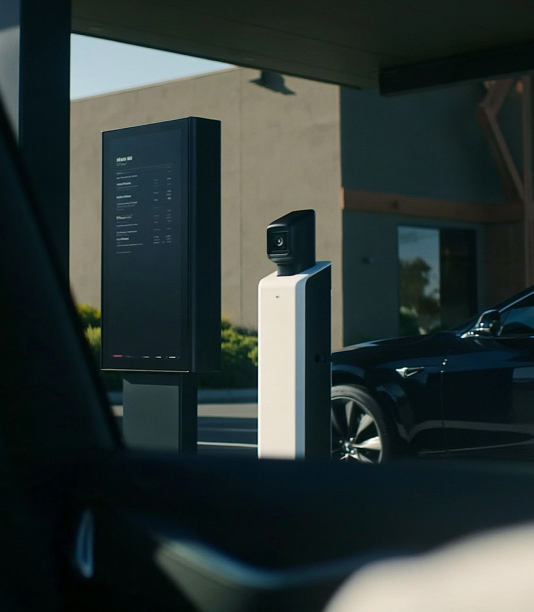
The Gap
그런데 이 도로에서는 지금까지의 방식이 닿지 않습니다.
사람이 타지 않은 차는 손짓도 시선도 쓸 수 없고, 무선 데이터는 같은 규격으로 연결된 기기 사이에서만 오가며, 보행자는 아무 기기도 들고 있지 않습니다.
움직임과 불빛, 경적만으로는 구체적인 상황과 의도가 전해지지 않아, 알아차리지 못하거나, 다르게 이해하거나, 답을 확인하지 못하는 간극이 생깁니다.
01 전달
누구에게 보내는 신호인가요?
여러 주체가 함께 있는 도로에서 신호가 향하는 대상을 명확히 구분하기 어렵습니다.
02 해석
어떤 의도를 담고 있나요?
차량이 멈춘 이유가 양보인지 대기인지, 움직임만으로는 판단하기 어렵습니다.
03 확인
서로의 의도를 이해했나요?
신호를 전달하더라도 상대가 이를 어떻게 받아들였는지 확인하기 어렵습니다.
Vision
사람은 눈으로, 차와 기계는 카메라로 봅니다. 눈앞에 나타난 표현은 누구나 그 자리에서 볼 수 있습니다.
우리는 도로 위 주체들이 이미 공통으로 가지고 있는 비전(Vision)에서 새로운 커뮤니케이션의 가능성을 찾았습니다.
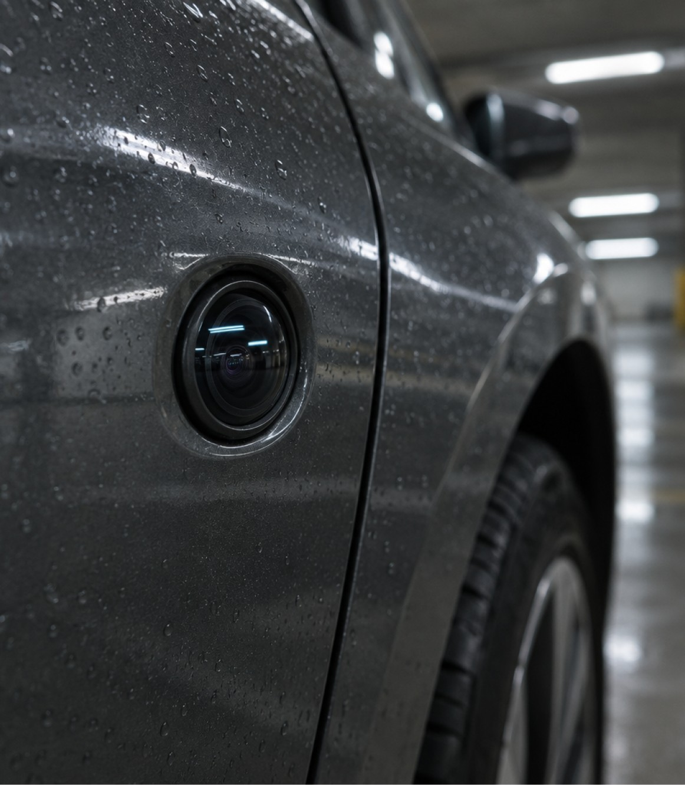
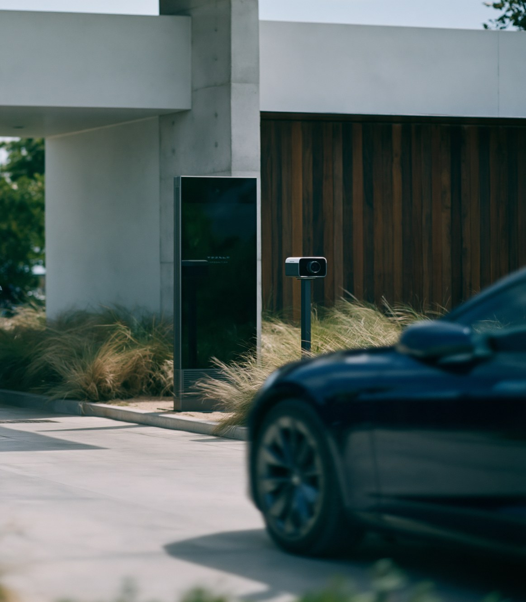
도로 위 서로 다른 주체들을 잇는 시각 공용어.
카 에스페란토는 차량과 사람, 기계가 상태와 의도를 주고받기 위해 설계한 시각 커뮤니케이션 체계입니다. 차량 AI는 전달할 내용을 공통 문법으로 구성하고, 읽는 대상에 맞는 표현으로 보여줍니다.
3D Converter
문장을 입력하면 차체 위 시각 언어로 바뀝니다. 차를 고르고, 거리를 바꾸고, 직접 돌려 보세요.
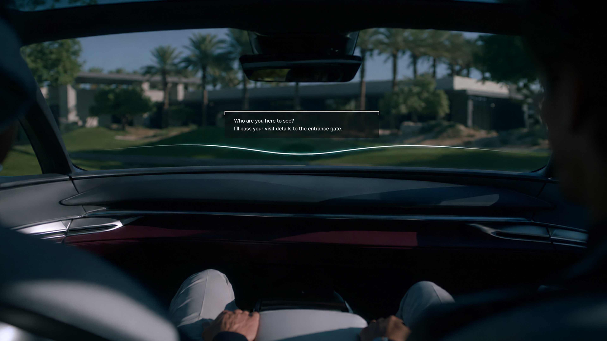
01. AR HUD · Transparent OLED Window
필요한 정보만 안내하고, 결정이 필요하면 탑승자에게 묻습니다.
차량 AI는 주변 차량과 기계의 표현을 읽고 카 에스페란토로 응답하며, 이동의 결과를 바꾸지 않는 대화는 진행 상황만 한 줄로 알리고, 결과가 바뀌거나 탑승자의 동의가 필요한 요청만 질문으로 표시합니다. 공통 안내는 전면 AR HUD에, 개별 안내는 좌석 가까운 투명 OLED 창문에 나타납니다. 필요한 순간에만 확인 한 번으로 결정하므로, 이동에 집중하면서도 중요한 결정은 탑승자의 손에 남습니다.
02. Multimodal Interaction
멀티모달 인터페이스로 차량 AI와 커뮤니케이션합니다.
보이스 투 보이스(Voice-to-Voice), 제스처, 터치로 차량 AI와 대화하며, 창밖의 대상을 말로 부르거나 손으로 가리켜 지목합니다. 답은 같은 방식으로 자기 창문에 돌아오고, 음성 안내는 끌 수 있습니다. 상황과 함께 탄 사람에 맞춰 누구나 자기 방식으로 뜻을 전합니다.
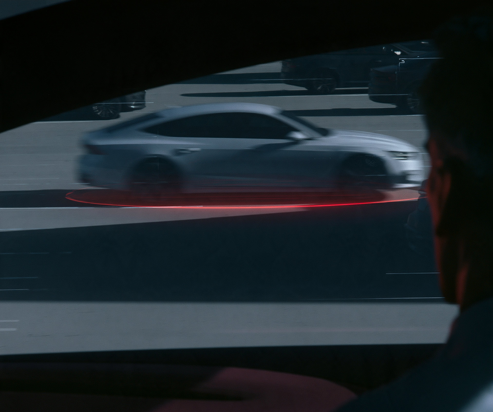
03. AR Marker
AI가 파악한 대화 상대를 확인합니다.
탑승자가 지목했든 차량 AI가 먼저 말을 걸었든, 지금 대화가 오가는 상대 위에 AR 표시가 나타나고 차량 AI는 위치와 특징으로 상대를 설명합니다. 표시는 상대의 실제 위치에 고정되어 거리에 따라 형태가 달라지고, 함께 뜨는 정보는 확인 대기, 대화 진행 등 단계에 따라 바뀌며, 탑승자는 확인하거나 변경, 취소할 수 있습니다. 확인된 상대만 받는 이가 되어, 말이 엉뚱한 곳으로 가는 전달의 간극을 보내기 전에 막습니다.
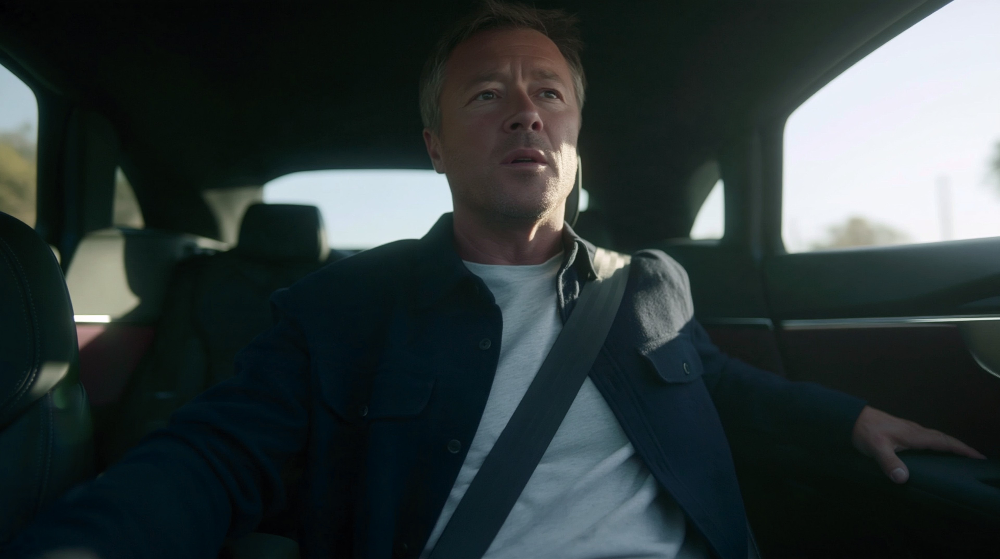
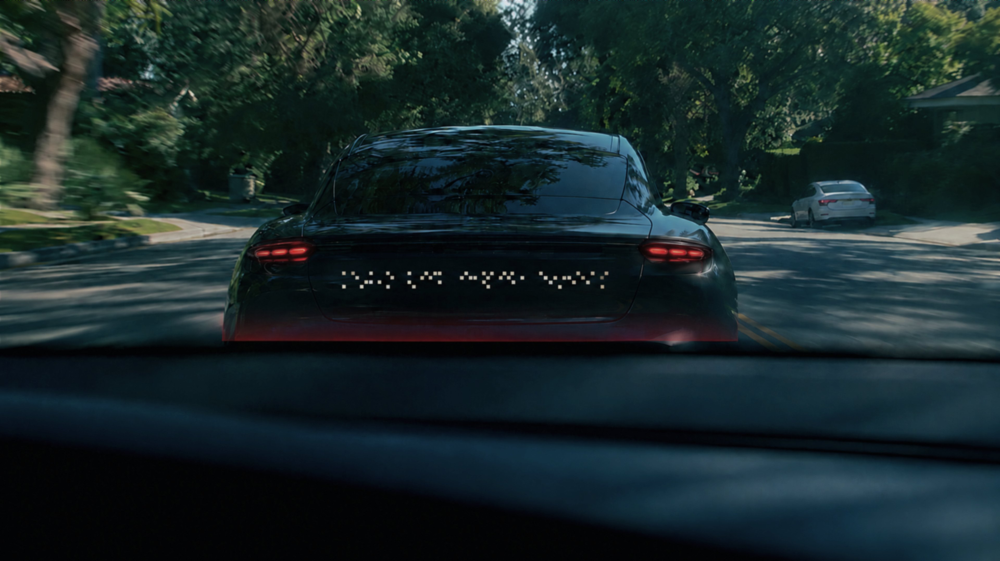
A cat suddenly ran into the road, so we had to brake. We're sorry for the sudden stop.
04. Message Card
탑승자의 의사를 문장으로 구성해 전달하고, 응답을 확인합니다.
차량 AI는 탑승자의 말에서 상황과 요구를 가려내 카 에스페란토 문법의 문장으로 바꾸고, 욕설·비하 표현은 제외합니다. 전송 전에는 카드에서 승인하거나 수정하고, 전송 뒤에는 같은 카드가 표시 중인 내용과 상대의 응답으로 바뀌며, 요청을 중단하거나 판단 이유를 물을 수 있습니다. 감정은 걸러지고 뜻은 남아 누구나 같은 뜻으로 읽는 문장이 되고, 전해졌는지 어떻게 답했는지 모르던 확인의 간극이 닫힙니다.
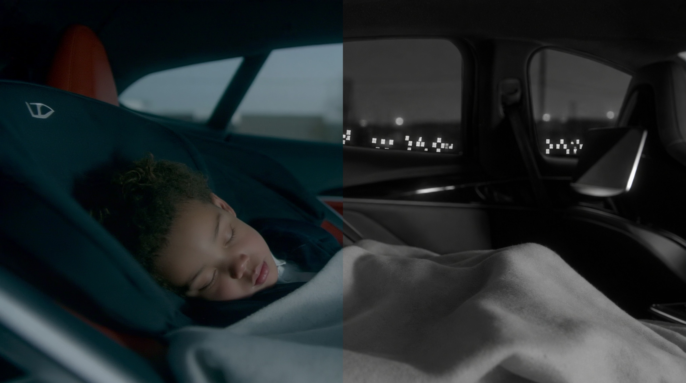
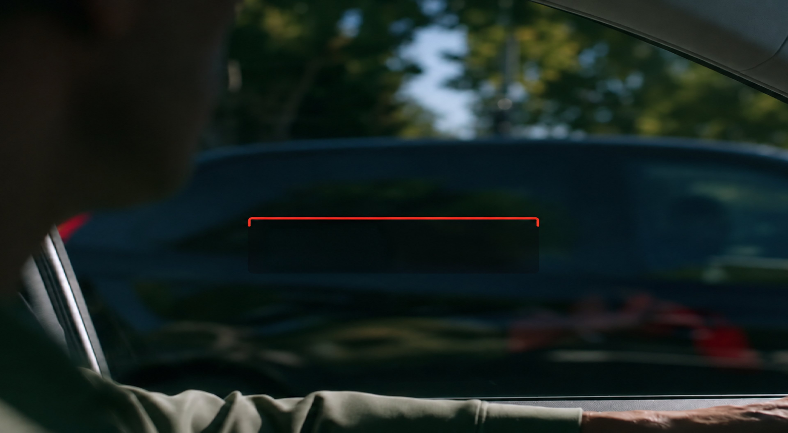
NOTICE MODE Child on board.
05. Notice Mode
노티스 모드의 표시 내용은 탑승자가 변경하거나 중단할 수 있습니다.
노티스 모드는 상대를 지목하지 않고 설정한 내용을 창문의 근적외선 LED로 주변에 지속적으로 알리며, 사람 눈에는 보이지 않고 차량과 기계만 읽습니다. 차량 AI가 제안하거나 탑승자가 어느 좌석에서든 직접 설정하고, 주변 차량의 노티스는 차량 AI가 주행에 반영하되 자기 행동을 바꾼 이유가 될 때만 작은 표시로 알리며 탑승자는 궁금할 때 펼쳐 봅니다. 무엇을 알릴지와 언제 볼지를 탑승자가 정하므로, 도로의 상태는 알되 알림에 시달리지 않습니다.
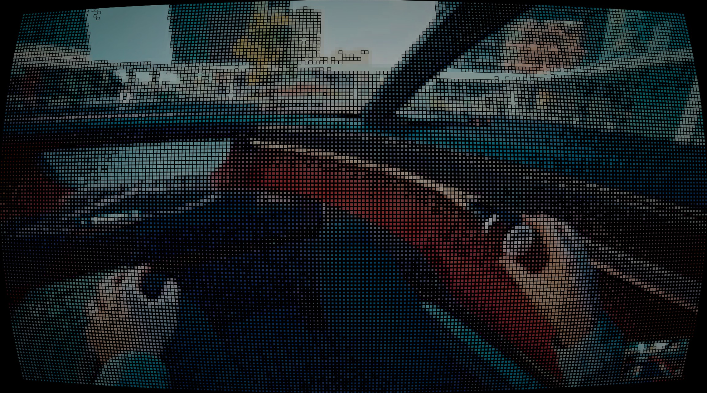
A BIRTHDAY BY THE SEA
릴리의 생일, 바다로 가는 길
아이의 생일을 맞아 한 가족이 바다로 떠납니다.
자율주행 레벨 4와 AIDV 시대, 도로 위의 차량과 사람, 기계는 각자의 의도를 지닌 소통의 주체가 됩니다. CAR ESPERANTO는 서로 다른 주체들이 마주하는 다양한 상황 속에서 의도를 전하고, 이해하고, 응답하는 과정을 하나의 여정으로 보여줍니다.
Designers
CHAEWON KIM JAEEUN JUNG
Handong Global University
EUNJONG LEE
Handong Global University
DESIGN MANAGEMENT CENTER
To the One who designed it all
THANKS FOR GOD
Jaeeun Jung
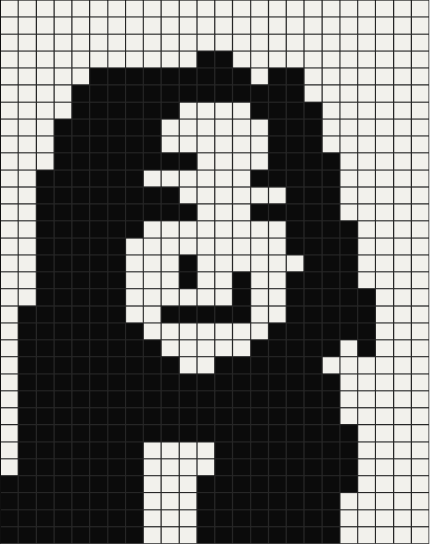
기술과 사람이 만나는 지점에서,
더 나은 경험을 설계합니다.
Interested
UX Design Planning · UX/UI Design · Inclusive & Accessible Design · Project Management
Major
Product Design · AI Convergence & Entrepreneurship
Chaewon Kim
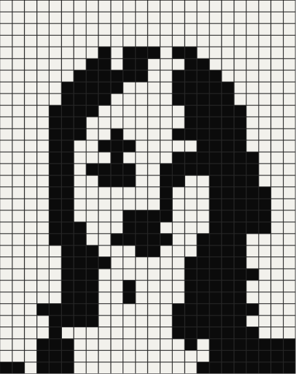
사용자에게 의미 있는 경험을
설계하는 디자이너입니다.
Interested
UX research · Interaction Design
Major
Product · Visual DESIGN